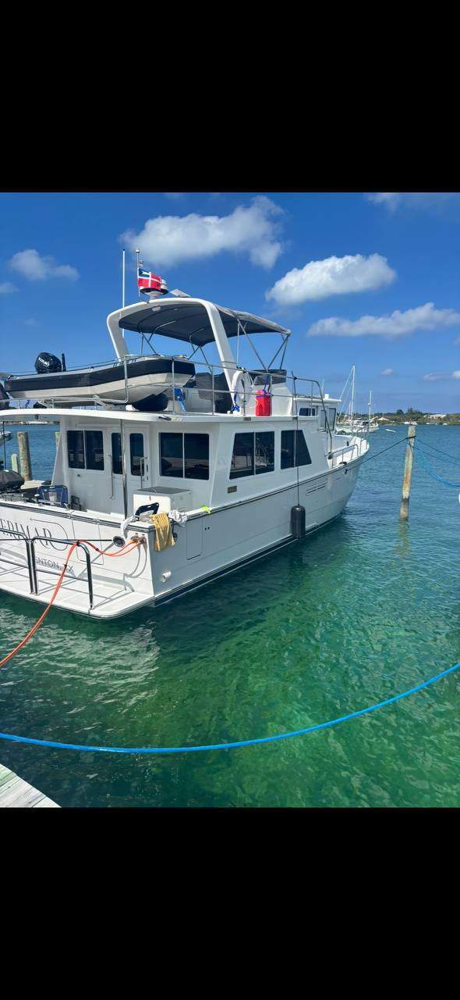
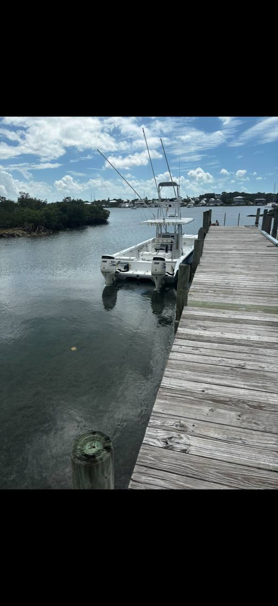
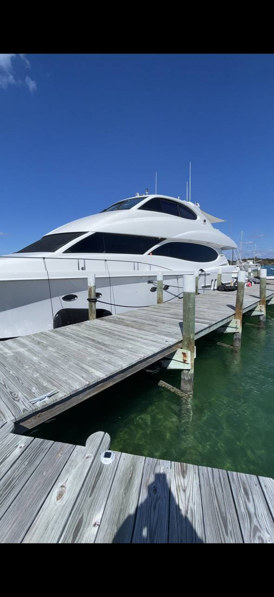
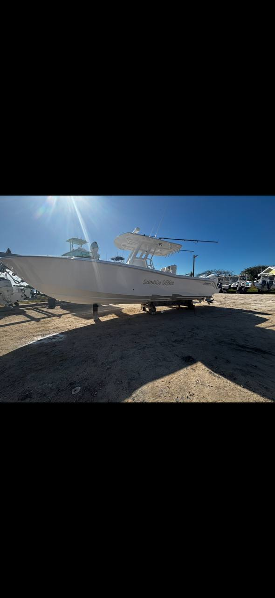
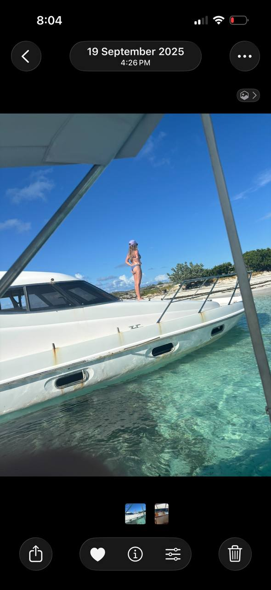

Boat Management
Routine readiness checks, arrivals, departures, dockside support, status updates, and day-to-day vessel care in the Abacos.

Luxury marine concierge services in Green Turtle Cay and the Abacos
Island Connection supports owners, guests, captains, and crews with polished local marine concierge service, from boat management and yacht provisioning to storm preparation, detailing, maintenance coordination, and bespoke island logistics.
Fastest response: email first, then call or text.
The value
Island Connection is built for people who want the Abacos to feel smooth from the start. Whether the need is provisioning before arrival, recurring boat checks, storm preparation, dockside support, detailing, service coordination, or guest logistics, the advantage is simple: there is someone local watching the details before they become problems.
Services
Flexible support for short stays, seasonal ownership, charters, and ongoing vessel care.
Routine readiness checks, arrivals, departures, dockside support, status updates, and day-to-day vessel care in the Abacos.
Groceries, drinks, onboard essentials, and guest items staged before arrival so the trip starts cleanly.
Interior refreshes, exterior washdowns, detailing coordination, and presentation support for boats and guest spaces.
Trusted local follow-through with vendors, repairs, scheduling, and service updates when owners are off-island.
Dock arrangements, supply runs, guest prep, island coordination, and the practical details that shape first impressions.
Custom support for owners, second-home families, and visitors who need local help handled with discretion and good judgment.
Who we help
For owners who want a reliable local contact keeping an eye on the vessel, handling support needs, and coordinating service work.
For travelers who want arrival support, provisioning, local help, and an easier stay from the moment they get in.
For professionals who need a local operator to help move faster, solve problems, and keep things organized ashore.
Brand direction
This draft stays under Island Connection, while the positioning and structure are strong enough to carry into a future domain-forward brand if needed, including Cay Connection.



Why Matthew
Matthew Sawyer is a 9th-generation Green Turtle Cay local. That matters. He understands the pace, the people, the water, and the practical details that visitors usually do not see until something gets complicated.
Island Connection is meant to feel easy to work with: calm communication, strong local awareness, and service that stays personal instead of transactional.


Add a strong Matthew portrait here for launch. This will materially improve trust and conversion.
Founder
The strongest version of this business is not just service lists. It is Matthew himself, someone with real local credibility, practical judgment, and the kind of on-island awareness that helps owners and guests avoid friction.
This section is ready for a short founder story, headshot, and a tighter personal introduction once approved.
What matters most
When something changes, there is someone nearby who already understands the island context.
Clear communication, organized coordination, and fewer loose ends for owners and guests to chase.
Provisioning, prep, and dockside details handled before they interrupt the trip.
Testimonials
“Placeholder for owner testimonial about reliable local support, fast communication, and confidence while off-island.”
Boat Owner, Abacos“Placeholder for guest testimonial about smooth arrival, provisioning, and a better overall island experience.”
Seasonal Guest“Placeholder for captain testimonial about dockside help, coordination, and getting things handled quickly.”
Captain / CrewStorm preparation
Boat checks, securing priorities, supply coordination, and practical preparation before major weather moves in.
Clear local communication for owners who are off-island and need visibility on the boat, dock, or property situation.
Initial follow-up, condition reporting, and coordination of cleanup or service needs after the storm has passed.
How it works
Start by email, call, or text with timing, vessel details, guest needs, and what should already be handled.
Matthew organizes priorities, provisions, vendor coordination, and any on-island support required.
The result is a smoother stay, better vessel oversight, and more time spent enjoying the water.
Visual direction





FAQ
Island Connection is based around Green Turtle Cay and supports clients across the Abacos, with logistics help in other areas when appropriate.
Yes. Some clients need recurring support, while others just need the right local help before arrival or during a specific trip.
Yes. Storm prep and post-storm coordination are part of the owner support value, especially for clients who are away from the islands.
Email is the smoothest first step because it makes it easy to share dates, vessel details, priorities, and any special requests in one place.
Inquiry form
Contact
The easiest way to begin is by email. If it is easier, call or text directly and we can take it from there.